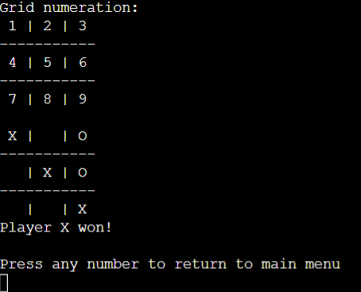

STREAM Benchmark
Built the STREAM Benchmark in x64 assembly language to fine-tune memory bandwidth measurement, demonstrating expertise in low-level programming for tasks demanding peak performance.
- Reach me for the source code and more details.
Tic Tac Toe Game
Crafted a classic terminal-based Tic Tac Toe game in Assembly x64, offering interactive gameplay against either another player or a basic AI opponent. Features include a clear terminal screen for enhanced visualization and a user-friendly interface, to improve the gaming experience.
 GitHub Linkprintf() Function
I and my teammate Ongun implemented the C library function printf entirely in assembly language, using advanced low-level programming skills. This project taught us a deep understanding of both assembly language and the inner workings of the printf function at the system level.
- Reach me for the source code and more details.
Custom Dynamic Stack Implementation
Implemented a custom dynamic stack designed for flexibility and efficiency. The stack automatically adjusts its size to accommodate added elements, ensuring optimal resource utilization. Key operations include push, pop, peek, and total, all with constant time complexity for swift execution.
GitHub LinkFibonacci Sequence Calculator With Dynamic Array
Implemented an optimized Fibonacci sequence calculator using dynamic arrays to enhance computational efficiency. The subroutine intelligently handles both cases where the Fibonacci sequence is partially or fully calculated.
- Reach me for the source code and more details.
Quicksort
Implemented the Quick Sort algorithm in Assembly x64, to understand and master data structures and algorithms. This project showcases a deep dive into low-level programming and algorithmic complexity.
GitHub Link